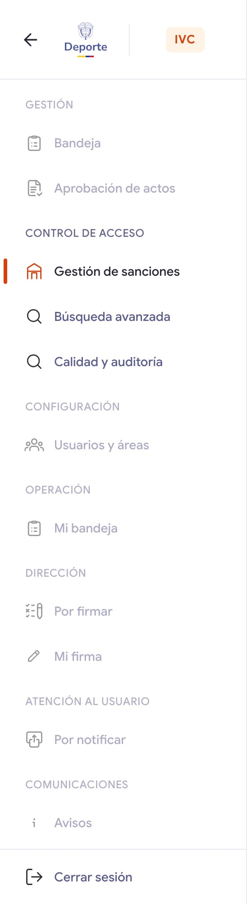

Superficie del módulo
Las 17 vistas que conforman Gestión de infractores: dónde viven en el IVC, cómo se llega a cada una, quién la ve, qué tiene y qué se puede hacer.
Dónde vive en el IVC
Una sección nueva del menú, con tres entradas.

El módulo entra como una sección nueva del menú del IVC. Ninguna pantalla actual del IVC cambia.
Las 17 vistas del módulo se llegan desde estas tres entradas del menú. El resto del IVC sigue igual.
Mapa de vistas
Desde cada entrada del menú, a qué vista se llega. Toca una para ir a su detalle.
Gestión de sanciones
Donde se registran, se revisan y se cierran los registros.
- PestañaProfesionalCoordinadorDirector
Gestión · Indicadores
Ver de un vistazo cómo está la base hoy y hacia dónde va.
Qué tiene
- Seis indicadores: vencen en 30 días, corren sin bloquear (sin validar), revisión media en días, devueltos a inspección, reincidencia a 3 años y conducta más frecuente; cada uno con su tendencia.
- Gráfica de infractores mes a mes: nuevos contra los que salen por cumplimiento, con selector de periodo y tabla accesible.
Qué se puede hacer
- Registrar infractores (lleva a Registrar)
- Cambiar a la pestaña Registros
Estados y errores
- Sin datos para comparar: «Aún no hay comparación.»
- Nada por vencer: «Ninguna medida vigente termina este mes.»
- PestañaProfesionalCoordinadorDirector
Gestión · Registros de infractores
Encontrar un registro y ver en qué estado está.
Qué tiene
- Tabla de registros: número, infractor (con marca de menor), origen de la obligación, acto administrativo, fin de vigencia, estado del registro y estado de la restricción.
- Filtros por estado del registro y de la restricción.
- Paginación.
Qué se puede hacer
- Tocar una fila abre el panel lateral del expediente
- Ver expediente (abre la ficha)
- Registrar infractores
Estados y errores
- Sin resultados con los filtros: invita a quitar filtros.
- Panel lateralProfesionalCoordinadorDirector
Panel del expediente
Revisar un registro rápido sin salir de la lista.
Qué tiene
- Estado del registro y de la restricción, nombre, documento y marca de menor.
- Franja de la sanción: si bloquea y hasta cuándo, con barra de avance.
- Resumen de la medida (conducta, acto, evento, fecha, lugar, tiempo, valor) y últimos movimientos.
Qué se puede hacer
- Ver expediente (abre la ficha)
- Editar
- Cerrar; tocar otra fila cambia el contenido
Estados y errores
- No tapa la pantalla ni bloquea el resto: es un panel, no un modal.
- Asistente por pasosProfesionalCoordinador
Registrar infractor
Registrar una decisión en firme, un infractor a la vez.
Qué tiene
- Antes de empezar: los bloques Infractor (B), Representante o tutor (C, solo si es menor), Hechos y conducta (D), Sobre la sanción (E) y Gestión interna (F), con su número de campos.
- Asistente por pasos con avance en porcentaje y estado de cada bloque; el bloque del representante aparece como paso solo si el infractor es menor.
- La fecha de registro (A) la pone el sistema.
- Aviso cuando la persona ya tiene una sanción vigente.
Qué se puede hacer
- Comenzar
- Siguiente y Atrás entre pasos
- Guardar registro
- Cancelar
- Ir a Carga masiva
Estados y errores
- Error junto al campo: obligatorio vacío, fechas que no cuadran (acto, ejecutoria, radicado, hechos), mínimo 6 meses de sanción, representante mayor de edad.
- Bloque incompleto: «Este bloque está incompleto.»
- Asistente de 6 pasosProfesionalCoordinador
Carga masiva
Subir muchos registros a la vez con la plantilla de la base de sancionatorios.
Qué tiene
- 1. Descarga la plantilla.
- 2. Sube el archivo diligenciado.
- 3. Validamos el archivo fila por fila (estructura, obligatoriedad y consistencia).
- 4. Corrige o excluye las filas con error.
- 5. Confirma la importación con el resumen.
- 6. Carga terminada, con el reporte descargable.
Qué se puede hacer
- Continuar / Validar archivo / Importar
- Corregir fila, Excluir fila, Incluir de nuevo
- Descargar el reporte
Estados y errores
- Errores por fila: documento vacío, tipo de documento fuera del catálogo, menos de 6 meses, menor sin representante, duplicado.
- Salir a mitad: «¿Salir de la carga masiva?»
- Ventana de confirmaciónProfesionalCoordinador
¿Salir de la carga masiva?
Evitar perder una carga a medias por error.
Qué tiene
- Aviso de que se pierde el archivo, la validación y las correcciones; nada se ha importado todavía.
- Paso en el que va la carga.
Qué se puede hacer
- Seguir aquí
- Salir y descartar
Estados y errores
- Solo aparece si ya hay avance; si no, sale directo.
- PantallaProfesionalCoordinadorDirector
Ficha del infractor
Ver todo lo de una persona en un solo lugar y cerrar el registro.
Qué tiene
- Encabezado con nombre, número de registro y documento.
- Bloques: Infractor, Representante (si es menor), Hechos y conducta, Sanción y Gestión interna.
- Columna lateral: estado de la restricción con sus pasos, historial de cambios y otras restricciones de la misma persona.
Qué se puede hacer
- Editar (profesional y coordinador)
- Validar registro y Devolver por subsanar (coordinador y director, mientras no esté Validado)
Estados y errores
- Sin movimientos en el historial.
- Sin otras restricciones: «Ninguna».
- Ventana de confirmaciónCoordinadorDirector
Validar registro
Cerrar el registro dejando constancia de quién lo validó.
Qué tiene
- Firma de quien opera: nombre, cargo, fecha y hora.
- Qué pasa al confirmar: el registro queda Validado y la restricción se activa si su vigencia está corriendo.
- Observación opcional.
Qué se puede hacer
- Confirmar
- Cancelar
Estados y errores
— - Ventana de confirmaciónCoordinadorDirector
Devolver por subsanar
Devolver un registro incompleto diciendo qué falta.
Qué tiene
- Firma de quien opera: nombre, cargo, fecha y hora.
- Motivo obligatorio: qué falta para poder validarlo.
Qué se puede hacer
- Confirmar
- Cancelar
Estados y errores
- Sin motivo no se puede confirmar.
- Confirmación + formularioProfesionalCoordinador
Editar registro
Corregir un registro, incluido uno devuelto por subsanar.
Qué tiene
- Ventana de confirmación firmada antes de abrir la edición.
- El mismo formulario del registro, con los datos cargados.
Qué se puede hacer
- Guardar cambios
- Cancelar
Estados y errores
- Las mismas validaciones del registro; el estado no cambia al guardar y el cambio queda en el historial.
Búsqueda avanzada
Donde se responde si una persona tiene una restricción vigente.
- PantallaProfesionalCoordinadorDirector
Búsqueda avanzada
Saber si una persona tiene una medida vigente y hasta cuándo.
Qué tiene
- Búsqueda por documento completo (mínimo 6 dígitos) o por nombre (al menos 3 letras), con ayuda ⓘ de cómo buscar.
- Filtros: estado de la medida, tipo de documento y ciudad.
- Búsqueda avanzada: persona (rango de edad, nombres, apellidos), medida (motivo, estado, entidad que la impuso) y fechas (impuesta, vence), y «solo las que bloquean hoy».
- Recientes como tarjetas y resultados como tabla ordenada por urgencia.
- Los menores salen enmascarados.
Qué se puede hacer
- Consultar
- Reiniciar filtros
- Activar búsqueda avanzada
- Ver todos
- Tocar una persona abre su panel lateral
Estados y errores
- Sin coincidencias: «Ninguna persona coincide con los criterios.»
- Falta información o hay caracteres no válidos.
- Error al consultar: «No pudimos completar la consulta.»
- Panel lateralProfesionalCoordinadorDirector
Panel de la persona
Responder en segundos si la persona puede entrar.
Qué tiene
- Franja de la medida: «Medida vigente · bloquea en todo el país», hasta cuándo, días que faltan y barra de avance.
- Conducta, acto, evento, fecha, lugar y tiempo de la medida.
- Últimos movimientos del registro.
- Si es menor: nombre y documento ocultos hasta abrir con motivo.
Qué se puede hacer
- Ampliar expediente (abre la ficha)
- Abrir con motivo (si es menor)
- Cerrar
Estados y errores
- Cargando: esqueleto mientras consulta.
- Menor con datos abiertos: aviso de apertura auditada con el motivo, usuario y hora.
- Ventana de confirmaciónProfesionalCoordinadorDirector
Abrir datos de un menor
Ver los datos reservados de un menor dejando constancia de para qué.
Qué tiene
- Explicación de la reserva reforzada.
- Motivos para elegir (uno o varios).
Qué se puede hacer
- Abrir datos
- Cancelar
Estados y errores
- Sin motivo: «Selecciona al menos un motivo para continuar.»
- Al abrir: aviso «Apertura registrada en la auditoría.»
Calidad y auditoría
Donde se cuida la base: hallazgos y rastro de cada cambio.
- PestañaCoordinadorDirector
Calidad y auditoría · Calidad
Encontrar los registros que hay que corregir.
Qué tiene
- Contadores por tipo de hallazgo: incompleto, duplicado y fechas incoherentes.
- Buscador y tabla con el registro, el hallazgo y el detalle (qué falta o con qué registro se duplica).
Qué se puede hacer
- Buscar
- Abrir el registro
Estados y errores
- Sin hallazgos.
- PestañaCoordinadorDirector
Calidad y auditoría · Trazabilidad
Saber quién cambió qué y cuándo.
Qué tiene
- Bitácora de cada cambio de estado con fecha y hora, registro, usuario, estado anterior, estado nuevo y nota.
Qué se puede hacer
- Buscar
- Abrir el registro
Estados y errores
- Sin movimientos.
En todo el módulo
Lo que aparece en varias vistas.
- Aviso emergenteProfesionalCoordinadorDirector
Avisos breves
Confirmar que una acción salió bien sin interrumpir.
Qué tiene
- «Registro INF-… creado en estado Recibido.»
- «Cambios guardados.»
- «Registro validado. La restricción quedó activa / inactiva.»
- «Registro devuelto por subsanar.»
- «Apertura registrada en la auditoría.»
- «Plantilla descargada.» / «Reporte de la carga descargado.» / «N registros cargados en estado Recibido.»
Qué se puede hacer
- Se cierran solos
Estados y errores
- El de devolución va en tono de advertencia.
- Del SUIDProfesionalCoordinadorDirector
Inicio de sesión
Entrar con la cuenta del SUID; el rol define qué ve cada uno.
Qué tiene
- Login del SUID. En la demo es simulado.
Qué se puede hacer
- Iniciar sesión
Estados y errores
—
De qué depende
| Qué | De quién | Nota |
|---|---|---|
| Inicio de sesión | SUID | El módulo no tiene login propio: usa el del SUID. |
| Roles y permisos | SUID | El SUID decide qué rol ve qué; la pestaña Roles dice qué debe mostrar la interfaz. |
| Menú y navegación | IVC | Sección Control de acceso en el menú, con migas de pan. |
| Firma de cada operación | SUID | Validar, devolver y editar llevan el nombre y el cargo de quien opera. |
| Datos y auditoría | Backend del módulo | Guarda los registros con el modelo de la pestaña Datos y cada cambio con usuario, fecha, hora, estado anterior y nuevo. |